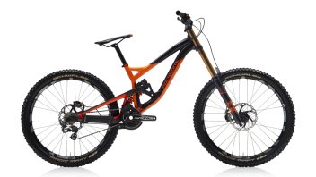
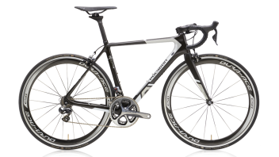
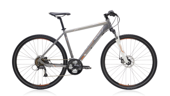
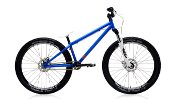
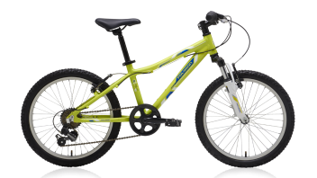

POLYGON

Mountain Bikes
Mungkin Anda sudah bosan dengan medan yang begitu ringan di perkotaan. Anda harus mencoba untuk berpetualang secara off-road. Dari sepeda full-suspensi kelas dunia hingga sepeda keluarga, kami memberikan lebih dari yang anda butuhkan. Para Rider dapat memilih sepeda Gravity, Enduro, dan Trail, serta XC Race. Anda yang menyukai bersepeda santai dapat memilih sepeda Leisure yang kaya akan fitur.

Road Bikes
Cepat dan ringan, Helios didesain untuk optimalisasi performa di jalan aspal. Helios seri A sangat cocok bagi para pembalap dan antusias rider yang menginginkan sepeda balap yang responsif dan cepat. Helios C pilihan para rider jarak jauh yang membutuhkan kenyamanan lebih. Bagi rider yang menginginkan sepeda dengan posisi duduk yang tegak, Helios F adalah pilihan terbaik. Apapun kebutuhan yang Anda perlukan Helios adalah sepeda yang tepat untuk anda.

Urban Bikes
Posisi berkendara yang tegak, pedal, dan handlebar yang rata, serta ban 700c yang lebih lebar merupakan paduan sempurna untuk kebutuhan bersepeda di perkotaan. Seri Hybrid cocok untuk digunakan di jalan raya hingga medan offroad ringan. Gates belt drive yang minim perawatan dan tenang diaplikasikan ke beberapa sepeda SUB dan beberapa Citybike. Bagi rider yang bersepeda dengan pasangan, dapat memilih sepeda seri tandem dan bagi para traveller maka sepeda seri Folding adalah pilihan yang menarik.

BMX/DIRT Jump Bikes
Diperuntukkan bagi individu berjiwa bebas, BMX race yang cepat dan gesit, BMX freestlyle untuk atraksi - atraksi yang menarik, dan sepeda Dirt Jump dengan lompatan lompatan atraktif yang indah. Sepeda Dirt Jump dan BMX 20 atau 24 inch ini siap memuaskan adrenaline Anda.

Youth Bikes
Kita masih mengingat sepeda pertama kita, tidak peduli apakah sepeda baru atau lama, sepeda tersebut menggambarkan sesuatu yang sangat spesial yaitu kebebasan. Dari sepeda anak pertama kali dengan 2 roda independen sampai bersepeda di jalur sepeda bersama keluarga hingga ke sepeda junior road atau sepeda MTB, semua sepeda ini akan sangat menyenangkan rider muda dalam petualangan mereka.